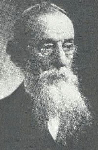
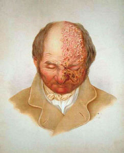

|  |
Hutchinson's sign = Involvement of the tip of the nose from herpes
zoster, a sign taken to indicate that the eye may be seriously involved
by VZV because of the involvement of the nasal branch of the nasociliary
nerve.
|  |
Jonathan Hutchinson (1828-1913) was a surgeon, eye-surgeon, neurologist, syphilologist and dermatologist, writer and teacher. Born a Quaker at Selby where his father was a merchant, he served his medical apprenticeship with Caleb Williams in York before moving in 1850 to St Bartholomew's in London to complete his training. After a brief return to York for his House Surgeon's post he came back to London, studying ophthalmology at Moorfields and striving to learn "all he could in all branches of medicine". For a while medical journalism was his only source of income; by 1855 he was on the staff of the Medical Times and Gazette, the main competitor of the Lancet and edited by Thomas Spencer Wells.
He put up his plate at 14 Finsbury Circus in the year he married (1856), and became the paid Secretary of the New Sydenham Society. It was through this Society that he published his atlases of Skin Diseases and Drug Eruptions. In 1859 he was appointed Assistant Surgeon to the London Hospital, achieving the FRCS three years later and in 1863 was promoted to full surgeon.
Though his surgery was mainly conducted at the London, he was an eye surgeon at Moorfields and neurology and ophthalmology both intrigued him. Earlier he had studied with James Startin at his newly founded Skin Hospital at Blackfriars and once on the staff, it provided his centre for dermatology and syphilology. Soon he became pre-eminent and Blackfriars emerged as the postgraduate skin centre.
He edited the British Medical Journal for one year and from 1877 to 1888 produced the two volumes of his Atlas Illustrating Clinical Surgery. His "one man" publication - the Archives of Clinical Surgery (to be seen today in the Willan library) - appeared from 1889 until 1900 and is well worth a look. He claimed he had no time to write any systematic book, but he made meticulous notes, and incomparable data are available on his numerous patients, many of dermatological interest. Scadding29 referred to these Archives while pursuing the earliest recognition of sarcoidosis; he found that Mrs Mortimer's Malady had been termed by Hutchinson "lupus vulgaris multiplex non-ulcerans".
Hutchinson's amazingly retentive memory, coupled with his genius for teaching, enabled him to fascinate large audiences on a multiplicity of subjects. He attained a unique status. With his tall, stooping frame, his untidy black beard and his slow speech he presented an austere, seemingly humourless figure. It might seem amazing that such a solemn man could enthral his audiences but this is precisely what he did. In 1893 he opened, at his own expense, a Clinical Museum at 1 Park Crescent, and transferred it to a house in Chenies Street in 1898. The notice outside read: "The Medical Graduate College and Polyclinic; lectures to be given at 5.15 pm". It can be regarded as the fore-runner of London's Postgraduate Medical School. His collection of drawings and memorabilia, later established as a museum at his home in Haslemere, was sold to William Osler, transported across the Atlantic, and presented to the Johns Hopkins Medical School in Baltimore.
An incomparable Syphilologist, he described his triad of notched incisor teeth, labyrinthine deafness and interstitial keratitis, and so provided a firm diagnosis long before the Treponema pallidum or the Wassermann reaction were recognized. It was well-known to all students.
He was elected President of the London (Third) International Dermatological Congress in 1896 and his Presidential address is quoted in full in the eighth volume of his Archives (October 1896). A perceptive extract is:- "If we ask how the most rapid development has come about the answer must be: By the aid of cheap printing and cheap travelling. We are now able to communicate easily one with another and to make mental use of each other's brains. A six hour journey will now enable a Londoner to visit, what I may fairly claim to be the Cradle of Dermatological Science - the Hôpital St Louis."
His presence was the one redeeming feature of this international meeting, which otherwise brought London little kudos, as our own high-class academics were so sparse and our facilities so inadequate.
He recognized an array of entities - varicella gangrenosa, the tabetic or Hutchinson's mask, Summer eruption (hydroa vacciniforme), angioma serpiginosum, notched incisor teeth, corneal salmon patch, choroiditis and circinate retinopathy.
He staunchly maintained his theory about the cause of leprosy which he attributed to the consumption of decaying fish, this even after the causal organism had been demonstrated. It was his one "blind spot"; nevertheless he remained a good friend of Gerhard Hansen, the Norwegian leprologist at Bergen. His book on Leprosy and fish eating was published in 1906.